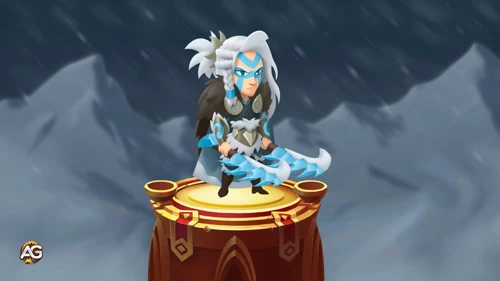
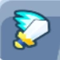
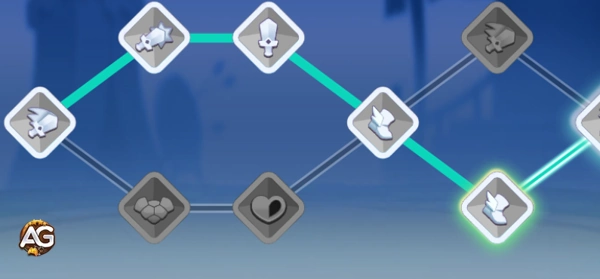

Se você está procurando a melhor unidade do Top Troops para eliminar inimigos da retaguarda enquanto controla o campo de batalha, Eira é sua resposta gélida. Esta assassina ágil se teleporta para trás das linhas inimigas, congelando alvos valiosos como Magos e Arqueiros, tornando-se um divisor de águas tanto no PvP quanto no PvE. Vamos explorar como maximizar seu potencial!

Guia da Unidade Eira no Top Troops, um jogo desenvolvido pela Socialpoint.
Por que Eira é uma Unidade Essencial
Durante seu tempo como espiã no Extremo Norte, Eira dominou o uso de adagas congelantes e a diplomacia com ursos polares (sim, sério!). Agora, em seu exército, ela:
✅ Teleporta instantaneamente para espelhar sua posição inicial no começo da batalha
✅ Congela grupos de inimigos por 3,25 segundos (mais tempo que a maioria dos atordoamentos!)
✅ Elimina alvos congelados com +75% de chance de crítico contra eles
✅ Fica invisível por 3 segundos para evitar ser focada no início
Não é à toa que jogadores buscando um guia de ascensão do Top Troops priorizam a Eira – ela é uma das melhores assassinas disruptivas do jogo.
Habilidades da Eira: Prioridade & Dicas de Batalha
1. Ponta do Iceberg (Habilidade Principal)
Prioridade: MAXIMIZE ESTA PRIMEIRO
Por que priorizar: Esta é a essência da Eira como uma das melhores unidades do Top Troops. O combo de teleporte e congelamento realiza três funções cruciais:
🔄 Controle de Posição: Acesso instantâneo à retaguarda inimiga, desorganizando formações
❄️ Controle de Grupo: Congelamento de 3,25s é mais longo que a maioria dos atordoamentos do jogo
⏱️ Sinergia de Recarga: Tempo de recarga base de 6s permite múltiplas ativações
Dica Avançada: O teleporte espelha sua posição tanto vertical quanto horizontalmente – posicione-a de frente para os carregadores inimigos.
2. Sinta o Norte
Prioridade: 2ª
Por que priorizar: Dobrar o raio de congelamento (2→4) transforma Eira de assassina de alvo único para uma monstra de lutas em equipe, porque:
📈 Escalonamento de Valor: Atinge 4x mais área (matemática de πr²!)
🔄 Potencial de Combo: Permite execuções em múltiplas unidades com Coração Gelado
🛡️ Utilidade Defensiva: Pode congelar unidades corpo a corpo em investida
Dica: Esta melhoria torna seu congelamento impossível de evitar em lutas agrupadas.
3. Coração Gelado
Prioridade: 3ª
Por que priorizar: O bônus de +75% de crítico contra alvos congelados pode parecer simples, mas tem profundidade estratégica:
💥 Multiplicador de Dano: Funciona como um aumento de dano de 1,75x quando combinado
⚔️ Limite de Execução: Permite eliminar alvos que antes sobreviveriam
🧊 Valor de Sinergia: Funciona com QUALQUER fonte de congelamento (aliados/itens)
Nota: Priorize esta habilidade por último, pois precisa de outras melhorias para se destacar.
4. Camuflagem de Neve
Prioridade: Última
Por que não priorizar: Embora a invisibilidade pareça ótima, ela tem limitações:
⏳ Problemas de Duração: 3s geralmente é menos tempo do que as animações de investida dos inimigos
🎯 Lógica de Alvo: Inimigos podem simplesmente mudar o foco para aliados vulneráveis
🔄 Custo de Oportunidade: Outras habilidades oferecem mais valor constante
Dica: Só melhore esta habilidade depois de maximizar as mecânicas de congelamento.
Prioridade de evolução de equipamento: foco em estatísticas principais de Eira
As escolhas de equipamento amplificam os pontos fortes da Eira como uma assassina de explosão. Aqui está a lista de prioridades do guia de Top Troops:
1º - Equipamento de Recarga:
Mais congelamentos = mais controle. Reduzir o tempo de recarga de 6s do congelamento permite que ela mantenha os inimigos imobilizados constantemente.
2º - Equipamento de Ataque:
Dano bruto garante que os alvos congelados não sobrevivam à sua chuva de críticos.
3º - Equipamento de Chance de Crítico:
Sinergiza com Coração Gelado para um dano massivo de execução.

4º - Equipamento de Velocidade de Ataque:
Ajuda a acumular dano entre congelamentos.
Prioridade de Talentos
Dano: Mais explosão = elimina alvos congelados mais rapidamente.
Chance de Crítico: Aproveita sua passiva contra inimigos congelados.
Velocidade de Movimento: Ajuda a reposicionar-se após o teleporte.
Velocidade de Ataque: Boa, mas menos impactante do que dano bruto/crítico.

Árvore de Talentos da Assassina Eira, Top Troops.
As Melhores Composições de Equipe da Eira: As Melhores Sinergias de Congelamento no Top Troops
Eira domina quando está emparelhada com esses aliados poderosos que amplificam suas mecânicas de congelamento e potencial de assassinato:
1. Coração Congelado - O Amplificador de Congelamento
Este mago lendário é o parceiro perfeito para Eira. Seu congelamento de grande área (alcance de 10!) prepara Eira para eliminar os alvos facilmente. A sinergia fica ainda mais brutal porque:
O congelamento dele ativa a chance de crítico de +75% da Eira contra alvos congelados
Ele também causa dano bônus a inimigos congelados - dobrando a punição
Ambos compartilham o bônus da facção Milícia para aumentar as estatísticas
2. Arqueiro Congelado - O Executor Gélido
Este arqueiro de nível S+ cria zonas de congelamento mortais que tornam Eira imparável:
Suas ataques têm 50% de chance de congelar, oferecendo mais oportunidades de crítico para Eira
Reduz a defesa inimiga em 8% nas zonas de congelamento - fazendo Eira bater ainda mais forte
Começa a batalha invisível como Eira, criando uma dupla furtiva na retaguarda
3. Ymir - O Corpo a Corpo Congelado
Este causador de dano corpo a corpo se torna aterrador quando emparelhado com Eira porque:
Ataques Melhorados pelo Congelamento: A segunda habilidade de Ymir causa dano bônus a inimigos congelados (mesmo que ele não consiga congelá-los sozinho)
Pressão Corpo a Corpo: Enquanto Eira congela a retaguarda, Ymir destrói os inimigos da linha de frente pegos nas zonas de congelamento dela
Estratégia Final de Congelamento
Posicione Eira para teleportar para a retaguarda inimiga
Faça Coração Congelado lançar seu imenso congelamento de AOE
Deixe o Arqueiro Congelado reduzir a defesa inimiga
Veja Eira eliminar os alvos congelados com críticos de 75%
Ymir atinge inimigos congelados com mais força - use-o para finalizar os alvos que Eira congela.
Dica Profissional: Esta composição funciona melhor contra equipes que dependem de causadores de dano frágeis na retaguarda. Contra composições de linha de frente pesada, considere trocar Ymir por outro causador de dano.
Counter a Ser Observado
Até as melhores unidades do Top Troops têm fraquezas. Eira tem dificuldades contra:
Tanques Anti-Assassino: Unidades que punem atacantes corpo a corpo podem derrubar Eira rapidamente.
Amplicação de Gelo de Coração Congelado: Assim como sua passiva "Os ataques de gelo contra inimigos congelados causam +10% de dano", algumas unidades têm habilidades que punem os efeitos de congelamento. Isso significa que o próprio congelamento de Eira pode se voltar contra ela se a equipe inimiga tiver esses especialistas anti-congelamento.
Área de Efeito de Alta Explosão: Ela é frágil se pega no fogo cruzado.
Veredito Final: Vale a Pena Ter Eira?
Com certeza. Seja seguindo um guia de ascensão do Top Troops ou apenas buscando uma assassina versátil, Eira entrega. Seu combo único de teleporte e congelamento destrói estratégias inimigas enquanto elimina alvos de alto valor. Priorize suas habilidades e equipamentos conforme descrito, emparelhe-a com aliados sinérgicos e veja os inimigos tremerem de medo!
Dica Profissional: Tente posicioná-la em diferentes quadrantes de batalha no modo de prática para dominar o espelhamento de seu teleporte – essa é a chave para liberar todo seu potencial como uma das melhores unidades do Top Troops.
Você gostou do nosso Guia da Eira no Top Troops? Há algo que não entendeu ou gostaria de sugerir mudanças? Convidamos você a se juntar à nossa sessão de comentários na página do Alexandre Games Blog. Não hesite em expressar sua opinião, clarificar suas dúvidas e compartilhar sua sugestões. Clique no botão abaixo para começar: